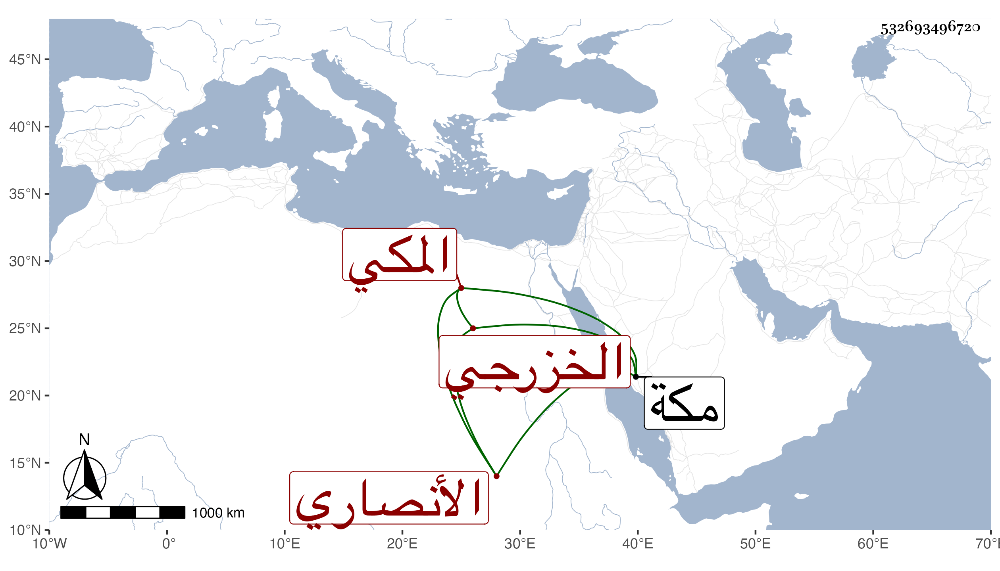

0902Sakhawi.DawLamic.ITO20230111-ara1.EIS1600.532693496720
Biography ID: 532693496720
922
أمن هانئ ابنة يوسف بن أبي القسم بن أحمد بن عبد الصمد الأنصاري الخزرجي المكي سبطة أبي اليمن الطبري وابنة خالة والده العز بن فهد ويعرف بابن الحنيفي . ولدت ظنا في نحو سنة خمس ، وتزوجها عبد الرحمن بن أبي بكر بن علي الريمي وأولدها أحمد ومات عنها فتأيمت حتى ماتت في ربيع الثاني سنة إحدى وثمانين بمكة ، وكانت خيرة صابرة قانعة رحمها الله .
